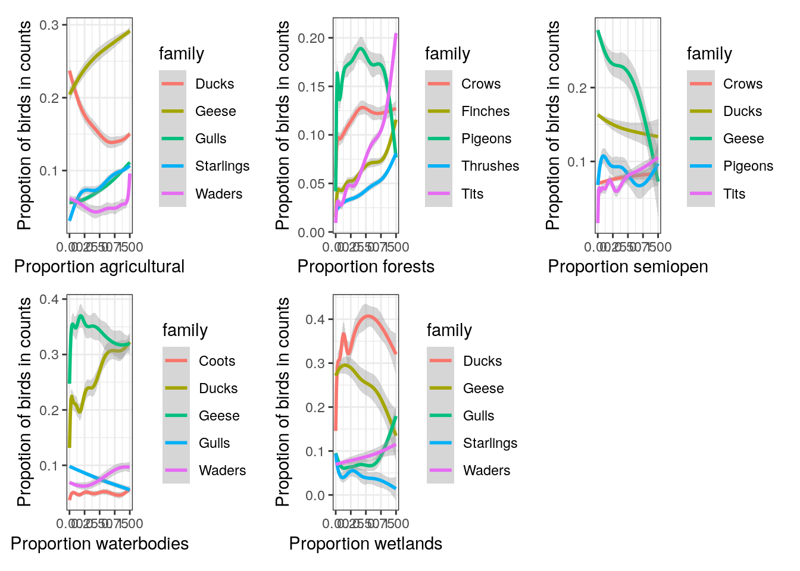
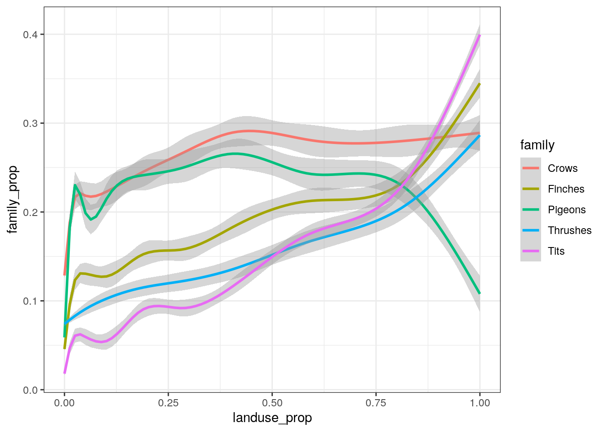
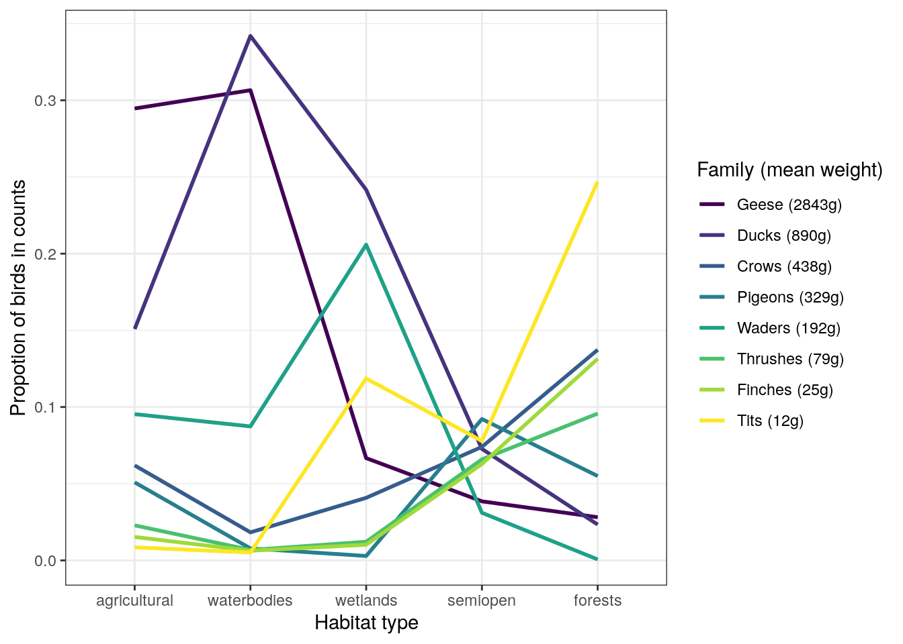
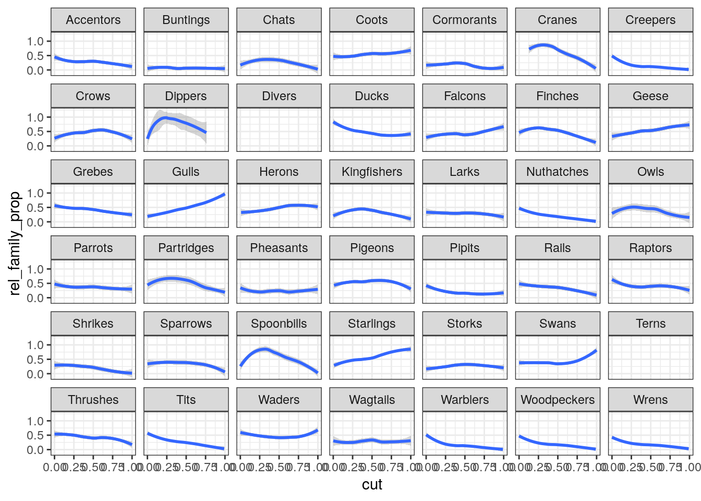

12 Visualizing species composition
library(bioRad)
library(ggplot2)
library(dplyr)
library(tidyr)
library(stringr)
library(ggpointdensity)
library(patchwork)
library(GGally)## Registered S3 method overwritten by 'GGally':
## method from
## +.gg ggplot2ppi <- readRDS("data/processed/composite-ppis/500m/201712312305.RDS")
wb_props <- readRDS("data/processed/sovon/wb_props.RDS")
ptt_props <- readRDS("data/processed/sovon/ptt_props.RDS")ppi$data@data %>%
# left_join(wb_props, by = c("wb_area_nr" = "area_nr")) %>%
left_join(ptt_props, by = c("ptt_route" = "route")) %>%
filter(coverage > 0,
class != 1,
total_biomass > 0,
dist_radar < 66000,
urban < 0.1) %>%
identity() -> aa %>%
dplyr::select(all_of(c(colnames(ptt_props)[2:45], "semiopen", "forests", "wetlands", "waterbodies", "agricultural"))) %>%
pivot_longer(cols = all_of(colnames(ptt_props)[2:45]), names_to = "family", values_to = "family_prop") %>%
pivot_longer(cols = all_of(c("agricultural", "semiopen", "forests", "wetlands", "waterbodies")), names_to = "landuse", values_to = "landuse_prop") %>%
drop_na() %>%
filter(landuse_prop >= 0.9) %>%
group_by(landuse, family) %>%
mutate(weighted_use = family_prop * landuse_prop) %>%
summarise(m = mean(weighted_use), .groups = "drop_last") %>%
arrange(desc(m), .by_group = TRUE) %>%
top_n(10) %>%
ungroup() %>%
identity() -> d## Selecting by m| landuse | family | m |
|---|---|---|
| agricultural | Geese | 0.2840910 |
| agricultural | Ducks | 0.1466670 |
| agricultural | Gulls | 0.1085416 |
| agricultural | Starlings | 0.1042132 |
| agricultural | Waders | 0.0828540 |
| agricultural | Crows | 0.0654540 |
| agricultural | Pigeons | 0.0599481 |
| agricultural | Coots | 0.0405444 |
| agricultural | Thrushes | 0.0220838 |
| agricultural | Finches | 0.0174375 |
| forests | Tits | 0.1823224 |
| forests | Crows | 0.1226347 |
| forests | Finches | 0.1034889 |
| forests | Pigeons | 0.0917419 |
| forests | Geese | 0.0852605 |
| forests | Thrushes | 0.0741949 |
| forests | Ducks | 0.0520463 |
| forests | Woodpeckers | 0.0459646 |
| forests | Starlings | 0.0384569 |
| forests | Warblers | 0.0289376 |
| semiopen | Ducks | 0.1320558 |
| semiopen | Tits | 0.0926741 |
| semiopen | Pigeons | 0.0922223 |
| semiopen | Gulls | 0.0900611 |
| semiopen | Geese | 0.0850546 |
| semiopen | Coots | 0.0824255 |
| semiopen | Crows | 0.0777499 |
| semiopen | Waders | 0.0540976 |
| semiopen | Thrushes | 0.0535645 |
| semiopen | Finches | 0.0525768 |
| waterbodies | Geese | 0.3156837 |
| waterbodies | Ducks | 0.3101695 |
| waterbodies | Waders | 0.0928583 |
| waterbodies | Gulls | 0.0552884 |
| waterbodies | Coots | 0.0541648 |
| waterbodies | Cormorants | 0.0422274 |
| waterbodies | Starlings | 0.0317149 |
| waterbodies | Crows | 0.0221255 |
| waterbodies | Thrushes | 0.0095472 |
| waterbodies | Pigeons | 0.0088227 |
| wetlands | Ducks | 0.3201433 |
| wetlands | Gulls | 0.1605909 |
| wetlands | Waders | 0.1294782 |
| wetlands | Geese | 0.1271094 |
| wetlands | Tits | 0.0749176 |
| wetlands | Crows | 0.0344233 |
| wetlands | Starlings | 0.0184404 |
| wetlands | Coots | 0.0179856 |
| wetlands | Finches | 0.0110915 |
| wetlands | Thrushes | 0.0110664 |
agricultural_families <- c("Geese", "Ducks", "Gulls", "Starlings", "Waders")
forests_families <- c("Pigeons", "Crows", "Tits", "Finches", "Thrushes")
semiopen_families <- c("Geese", "Ducks", "Pigeons", "Tits", "Crows")
waterbodies_families <- c("Geese", "Ducks", "Waders", "Gulls", "Coots")
wetlands_families <- c("Ducks", "Geese", "Waders", "Gulls", "Starlings")
families <- list("agricultural" = agricultural_families, "forests" = forests_families, "semiopen" = semiopen_families,
"waterbodies" = waterbodies_families, "wetlands" = wetlands_families)So we can select the following characteristic families for each of the landuse classes:
- agricultural: Geese, Ducks, Gulls, Starlings, Waders
- forests: Pigeons, Crows, Tits, Finches, Thrushes
- semiopen: Geese, Ducks, Pigeons, Tits, Crows
- waterbodies: Geese, Ducks, Waders, Gulls, Coots
- wetlands: Ducks, Geese, Waders, Gulls, Starlings
plot_landuse_family_proportions <- function(landuse_name, families) {
# landuse_name <- names(luf)
# families <- luf
#
# print(luf)
a %>%
dplyr::select(all_of(c(colnames(ptt_props)[2:45], "semiopen", "forests", "wetlands", "waterbodies", "agricultural"))) %>%
pivot_longer(cols = all_of(colnames(ptt_props)[2:45]), names_to = "family", values_to = "family_prop") %>%
pivot_longer(cols = all_of(c("agricultural", "semiopen", "forests", "wetlands", "waterbodies")), names_to = "landuse", values_to = "landuse_prop") %>%
drop_na() %>%
filter(family %in% families, landuse == landuse_name) %>%
# group_by(family) %>%
# mutate(family_prop = range01(family_prop)) %>%
# ungroup() %>%
# identity() -> p
ggplot(aes(x = landuse_prop, y = family_prop, color = family)) +
geom_smooth() +
xlab(paste("Proportion", landuse_name)) +
ylab(paste("Propotion of birds in counts"))
}
p <- mapply(plot_landuse_family_proportions, names(families), families, SIMPLIFY = FALSE)
# p <- lapply(families, plot_landuse_family_proportions)
# plot_landuse_family_proportions("agricultural", agricultural_families)## `geom_smooth()` using method = 'gam' and formula 'y ~ s(x, bs = "cs")'
## `geom_smooth()` using method = 'gam' and formula 'y ~ s(x, bs = "cs")'
## `geom_smooth()` using method = 'gam' and formula 'y ~ s(x, bs = "cs")'
## `geom_smooth()` using method = 'gam' and formula 'y ~ s(x, bs = "cs")'
## `geom_smooth()` using method = 'gam' and formula 'y ~ s(x, bs = "cs")'
a %>%
dplyr::select(all_of(c(colnames(ptt_props)[2:45], "semiopen", "forests", "wetlands", "waterbodies", "agricultural"))) %>%
pivot_longer(cols = all_of(colnames(ptt_props)[2:45]), names_to = "family", values_to = "family_prop") %>%
pivot_longer(cols = all_of(c("agricultural", "semiopen", "forests", "wetlands", "waterbodies")), names_to = "landuse", values_to = "landuse_prop") %>%
drop_na() %>%
filter(family %in% forests_families, landuse == "forests") %>%
# group_by(family, cut = cut_width(landuse_prop, width = 0.01, n = 100, labels = FALSE)) %>%
group_by(family) %>%
mutate(family_prop = range01(family_prop)) %>%
ungroup() %>%
# identity() -> p
ggplot(aes(x = landuse_prop, y = family_prop, color = family)) +
geom_smooth()## `geom_smooth()` using method = 'gam' and formula 'y ~ s(x, bs = "cs")'
selected_families <- c("Geese", "Ducks", "Pigeons", "Thrushes", "Tits", "Waders", "Crows", "Finches")
a %>%
dplyr::select(all_of(c(colnames(ptt_props)[2:45], "semiopen", "forests", "wetlands", "waterbodies", "agricultural"))) %>%
pivot_longer(cols = all_of(colnames(ptt_props)[2:45]), names_to = "family", values_to = "family_prop") %>%
pivot_longer(cols = all_of(c("agricultural", "semiopen", "forests", "wetlands", "waterbodies")), names_to = "landuse", values_to = "landuse_prop") %>%
drop_na() %>%
# filter(family %in% selected_families) %>%
filter(family %in% selected_families,
landuse_prop > 0.99) %>%
group_by(family, landuse) %>%
summarise(mean_family_prop = mean(family_prop), .groups = "drop_last") %>%
pivot_wider(names_from = landuse, values_from = mean_family_prop) %>%
identity() -> bptt <- readRDS("data/processed/sovon/ptt.RDS")
ptt %>%
distinct(species, .keep_all = TRUE) %>%
group_by(familyvernacular) %>%
summarise(mean_weight = mean(mean_weight), .groups = "drop_last") %>%
filter(familyvernacular %in% selected_families) %>%
arrange(desc(mean_weight)) %>%
rowid_to_column()-> d
b %>%
left_join(d, by = c("family" = "familyvernacular")) %>%
arrange(desc(mean_weight)) -> border_names <- c("agricultural", "waterbodies", "wetlands", "semiopen", "forests")
order_ids <- match(order_names, colnames(b))
b$weights <- round(b$mean_weight)
b$family_weight <- paste0(b$family, " (", b$weights, "g)")
b$family_factor <- factor(b$family_weight, ordered = TRUE, levels = b$family_weight)
ggparcoord(b, columns = order_ids, scale = "globalminmax", groupColumn = "family_factor", order = "allClass") +
geom_line(size = 1.0) +
xlab(paste("Habitat type")) +
ylab(paste("Propotion of birds in counts")) +
labs(color = "Family (mean weight)")
a %>%
dplyr::select(all_of(c(colnames(ptt_props)[2:45], "semiopen", "forests", "wetlands", "waterbodies", "agricultural"))) %>%
pivot_longer(cols = all_of(colnames(ptt_props)[2:45]), names_to = "family", values_to = "family_prop") %>%
pivot_longer(cols = all_of(c("agricultural", "semiopen", "forests", "wetlands", "waterbodies")), names_to = "landuse", values_to = "landuse_prop") %>%
drop_na() %>%
filter(landuse == "agricultural") %>%
group_by(family, cut = cut_width(landuse_prop, width = 0.01, n = 100, labels = FALSE)) %>%
summarise(mean_family_prop = mean(family_prop), .groups = "drop_last") %>%
ungroup() %>%
group_by(family) %>%
mutate(cut = (cut - 1)/100,
rel_family_prop = range01(mean_family_prop)) %>%
ungroup() %>%
filter(rel_family_prop > 0) %>%
# identity() -> b
ggplot(aes(x = cut, y = rel_family_prop)) +
# geom_pointdensity() +
geom_smooth() +
facet_wrap(vars(family))## `geom_smooth()` using method = 'loess' and formula 'y ~ x'